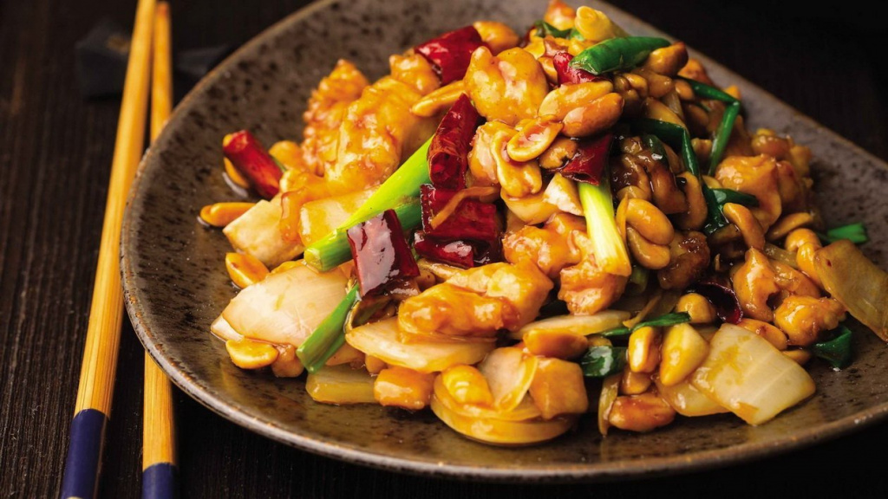
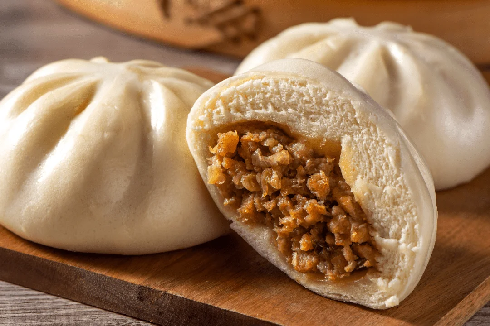

Вкусный блог!
Китайская кухня
Китайская кухня известна своим разнообразием, оригинальными вкусами и большим количеством приправ.
Мы представляем вам три наших любимых рецепта!
| Изображение: | Название блюда: | Рецепт: |
 |
Жа Дзяо Мянь | Ингредиенты:
лапша — 300 г;
свиной фарш — 200 г;
паста из ферментированных бобов — 2 ст. л.;
огурец — 1 шт.;
зеленый лук — 2 пера;
соевый соус — по вкусу.
Приготовление: Отварить лапшу согласно инструкции на упаковке. Обжарить свиной фарш с пастой из ферментированных бобов до готовности. Нарезать огурец и зеленый лук. Собрать блюдо: положить лапшу, сверху – фарш, огурцы и лук. Приятного аппетита! |
|  | Гун Бао Цзы Рен | Ингредиенты:
куриное филе — 300 г;
арахис — 100 г;
сладкий перец — 1 шт.;
имбирь — 1 ч. л. натертого;
чеснок — 2 зубчика;
соевый соус — 3 ст. л.;
кунжутное масло — 1 ст. л.
Приготовление: Куриное филе нарезать кубиками, обжарить на сковороде. Затем добавить имбирь, чеснок и нарезанный перец, обжарить еще несколько минут. Добавить арахис и соевый соус. Обжаривать 2-3 минуты и подать с рисом. Приятного аппетита! |
|  | Бао Цзы | Ингредиенты:
мука — 500 г;
вода — 250 мл;
дрожжи — 1 ч. л.;
свиной фарш — 400 г;
капуста — 100 г;
имбирь — 1 ч. л.;
соевый соус — по вкусу.
Приготовление: Замесить тесто из муки, воды и дрожжей, оставить подниматься. Фарш смешать с капустой и имбирем, добавить соевый соус. Раскатать тесто, разделить на порции и завернуть начинку. Приготовить на пару 15-20 минут. Приятного аппетита! |